Non-destructive
Kaynak değişmez. Edit, grade, mask, grafik ve AI çıktıları geri alınabilir yapı olarak yaşar.
Senaryo, pre-prodüksiyon, medya, kurgu, motion, tasarım, renk, VFX, ses, render, yayın ve arşiv. Bağımsız uzman motorlar; aynı yaratıcı bağlam üzerinde birlikte çalışır.
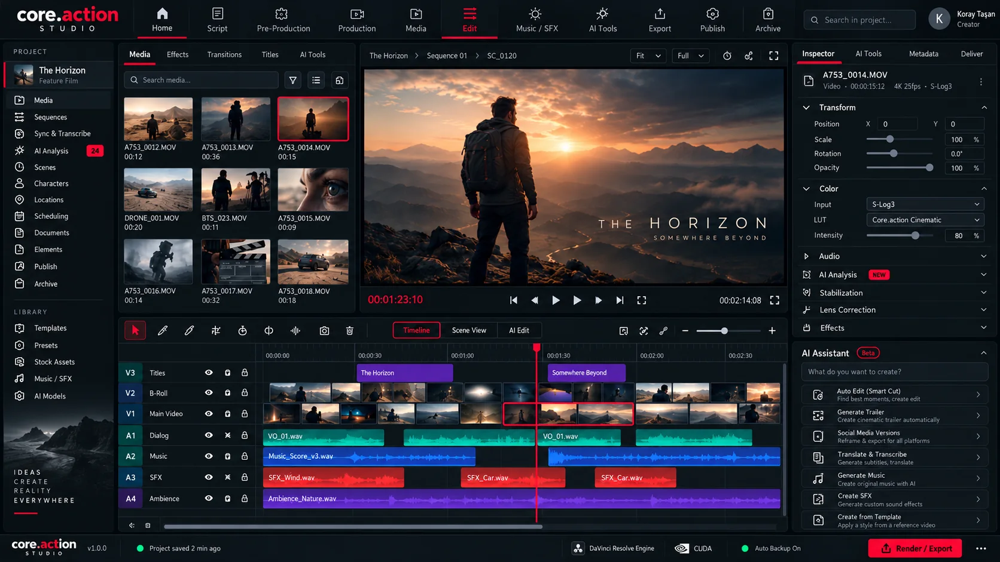
Bir senaryo satırı; sahneye, shot list’e, çekilen medyaya, PLAN’a, SCENE’e, MOVIE’ye, sosyal versiyona ve teslim paketine kadar izlenebilir. core.action’ın merkezi, timeline değil; yaşayan proje grafıdır.
Her uzman motor kendi alanında bağımsızdır. Proje hafızası, varlık kayıtları ve ortak kapsam motoru sayesinde birbirinin ürettiği çıktıları anlayabilir.
Kaynak değişmez. Edit, grade, mask, grafik ve AI çıktıları geri alınabilir yapı olarak yaşar.
Senaryo, sahne, ilk/son kare, stil, karakter ve timeline bağlamı tek hafızada.
AI mümkün olduğunca final piksel değil; düzenlenebilir katman, template, mask ve proje yapısı üretir.
Yerel analiz ve akıl yürütme; yalnız gerektiğinde dış servisler. Daha az veri, daha az maliyet, daha fazla tutarlılık.
Üç ayrı timeline formatı değil; aynı proje formatının üç çalışma kapsamı.
Kaynak seçimleri, ses eşleme, shot-level correction, cleanup, mask ve clip bazlı kararlar burada yaşar.
Her panel kendi üretim disiplinine odaklanır; ortak varlık ve proje hafızasıyla diğer motorlarla senkron kalır.
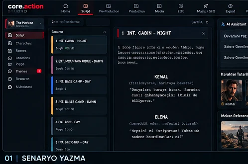
Senaryo, dramatürji, breakdown, karakter ve diyalog.
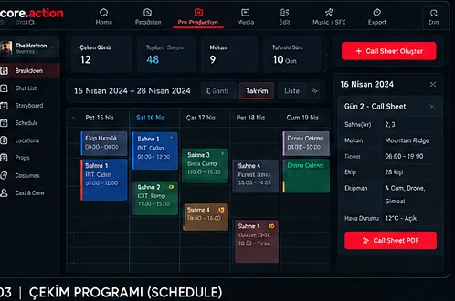
Shot list, storyboard, schedule, call sheet ve set akışı.
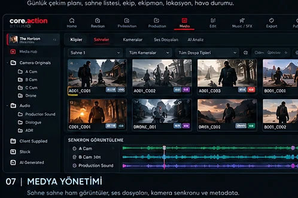
Ingest, organize, proxy, sync, relink ve project compiler.
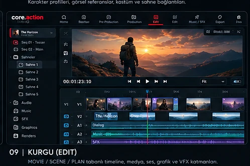
MOVIE / SCENE / PLAN tabanlı kurgu ve timeline.
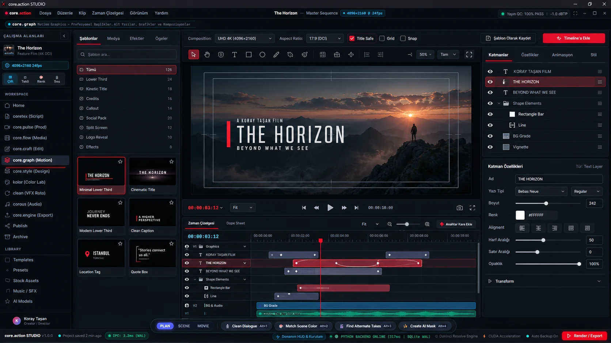
Editable motion composition, title, lower third ve template.
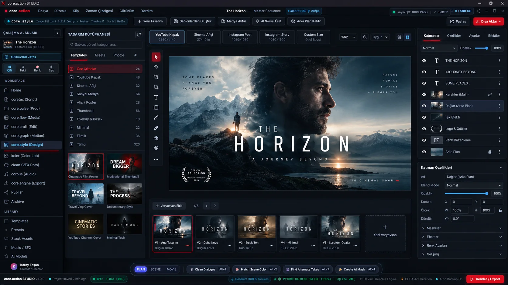
Layer tabanlı poster, thumbnail, sabit görsel ve fotoğraf.
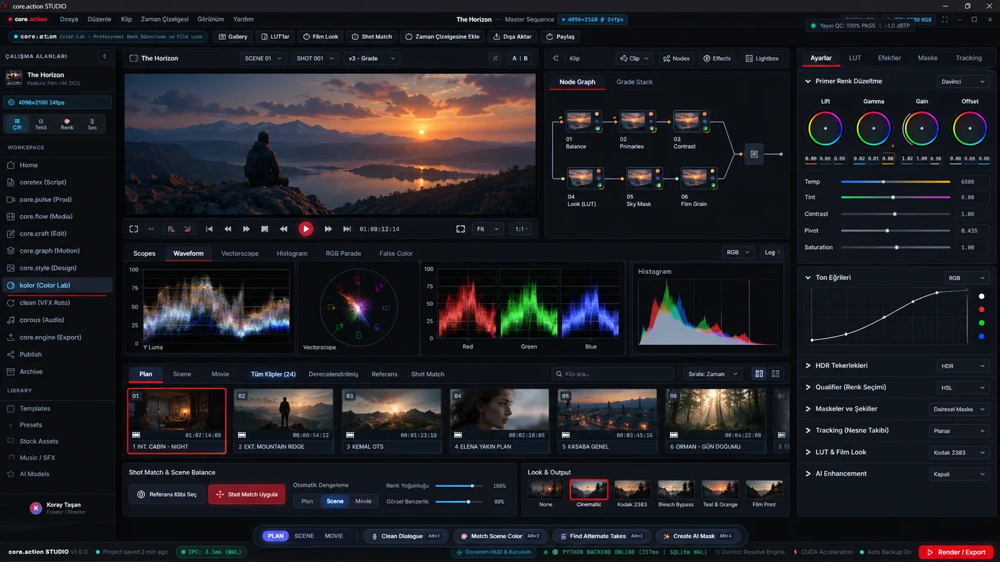
PLAN correction, SCENE match ve MOVIE film look.
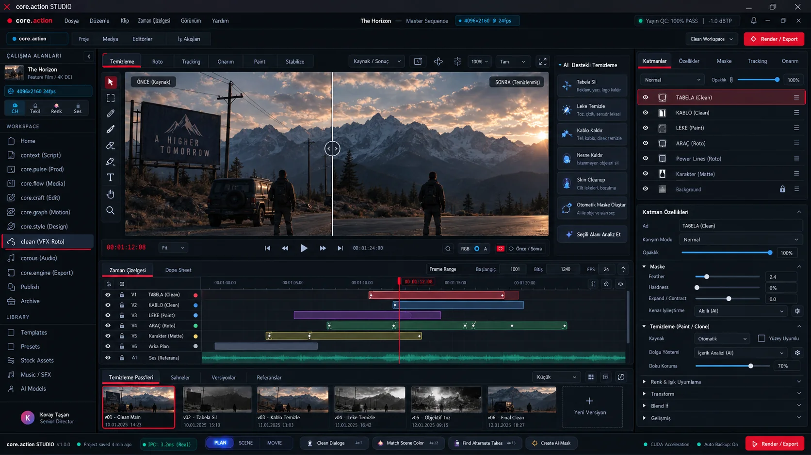
Cleanup, tracking, roto, repair ve non-destructive AI patch.
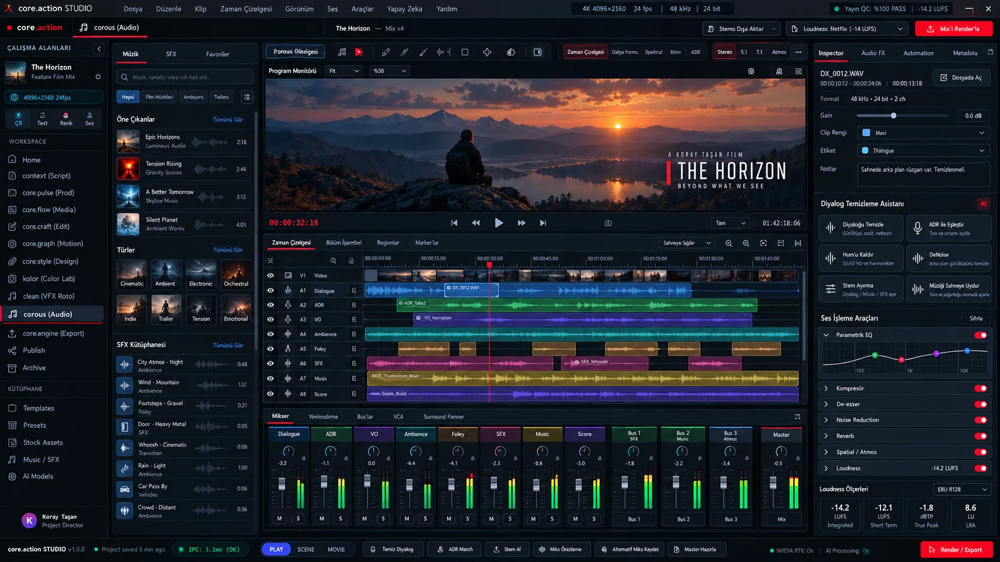
Dialogue, ADR, ambience, SFX, mix ve mastering.
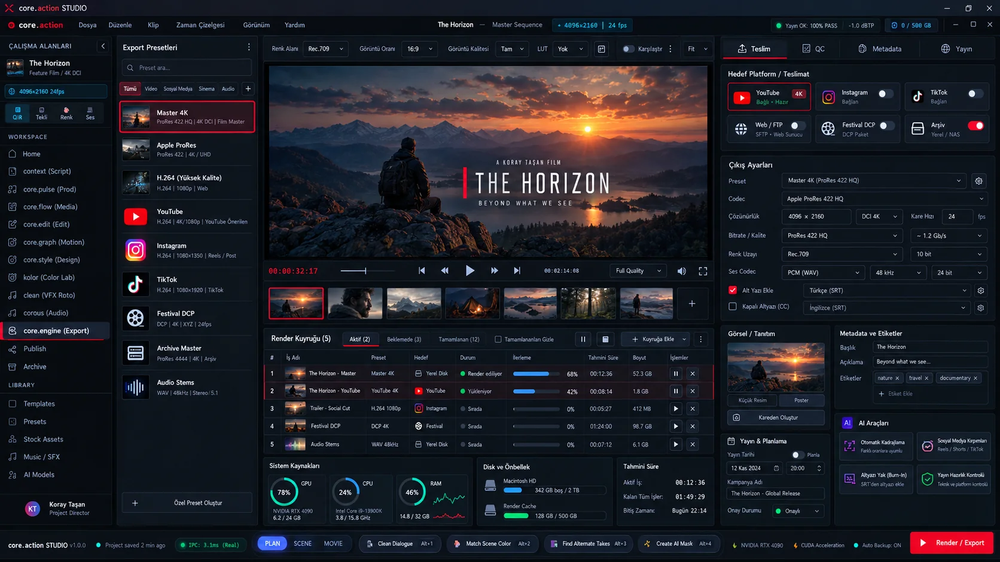
Render queue, codec, QC, export ve delivery package.
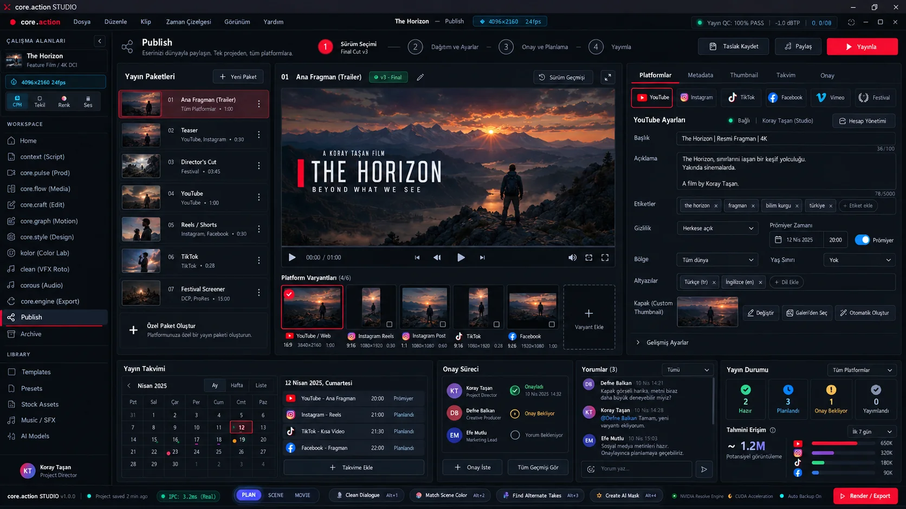
Platform metadata, thumbnail, schedule, approval ve yayın.
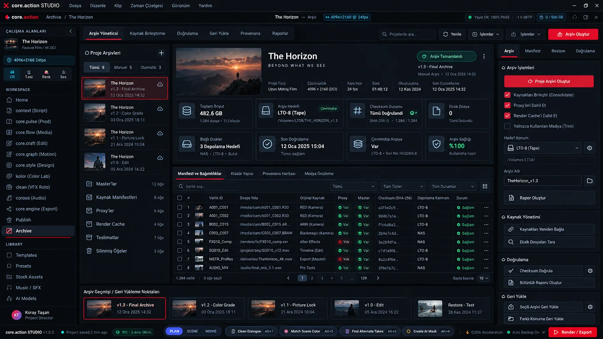
Manifest, checksum, consolidate, restore ve provenance.
Sahne outline, senaryo gövdesi ve AI yazım araçları.
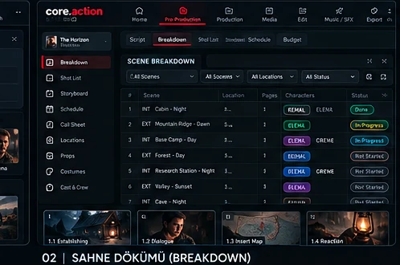
Senaryodan karakter, props, mekan ve notları çıkarır.
Takvim, ekip, mekan ve günlük plan akışı.
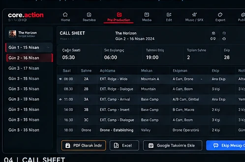
Saat, ekip, ekipman, hava durumu ve dağıtım.
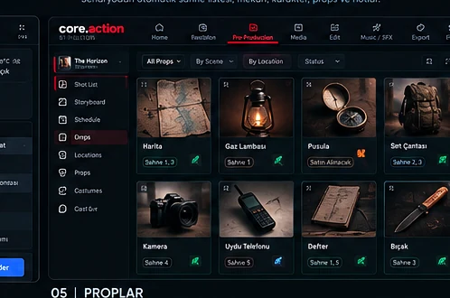
Sahne bazlı prop seçimi, stok ve durum takibi.
Ham görüntüler, ses dosyaları, senkron ve metadata.
Yerel zeka; senaryoyu, sahneyi, timeline’ı, ilk/son kareleri ve yaratıcı dili bilir. Basit işleri lokalde çözer; daha üst düzey üretim gerektiğinde seçilen bulut modeline yalnız gerekli bağlamı iletir.
Her motor kendi işini yapar. Living Project Graph tüm kararları, varlıkları ve çıktıları ortak proje hafızası üzerinden bağlar.
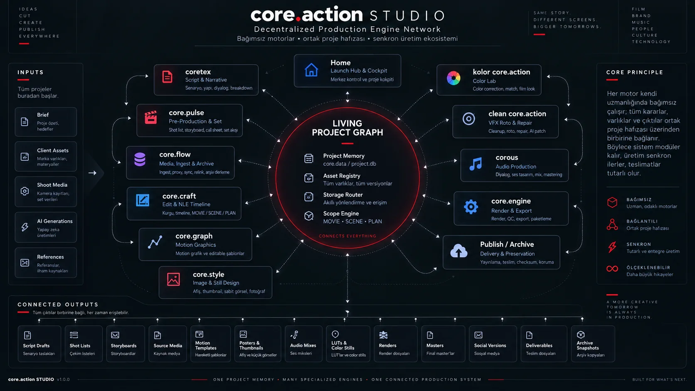
Panel değişir; proje bağlamı değişmez.
Akış lineer görünür; proje grafı değildir. Eksik coverage, yeni bir VFX ihtiyacı veya sürüm değişikliği herhangi bir noktadan önceki aşamalara güvenli şekilde geri dönebilir.
One project memory. Many specialized engines. One connected production system.